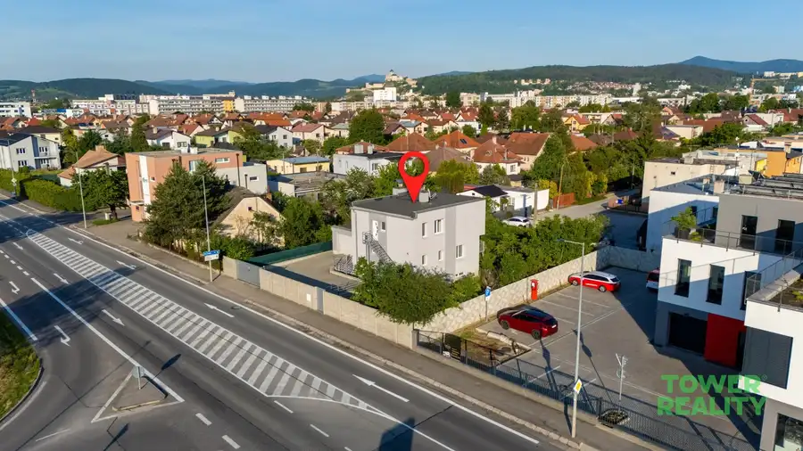
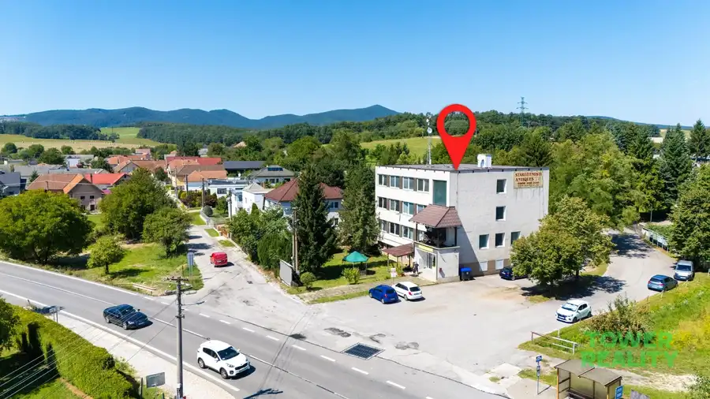
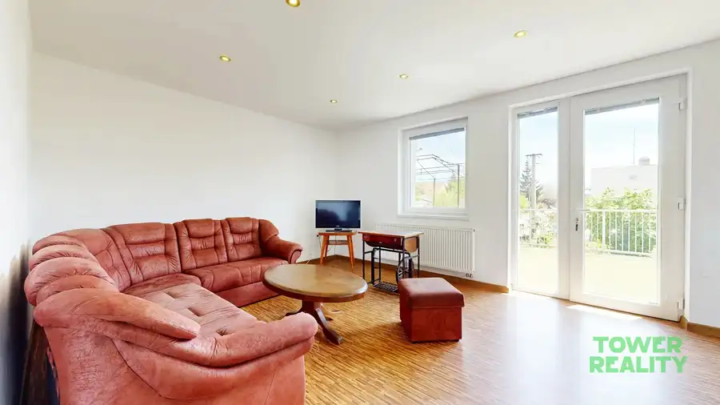
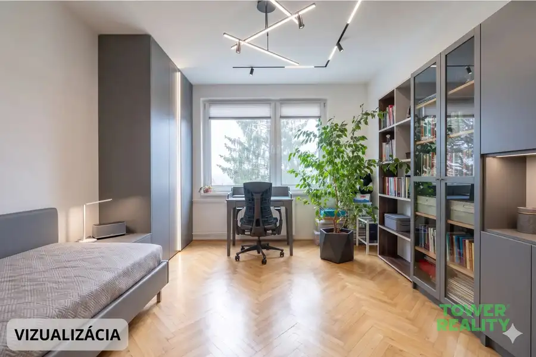
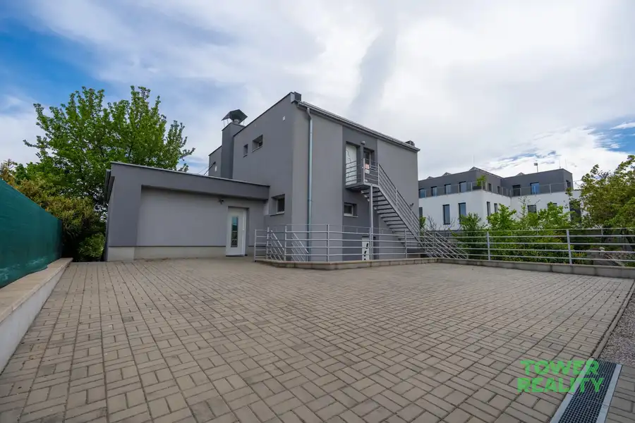
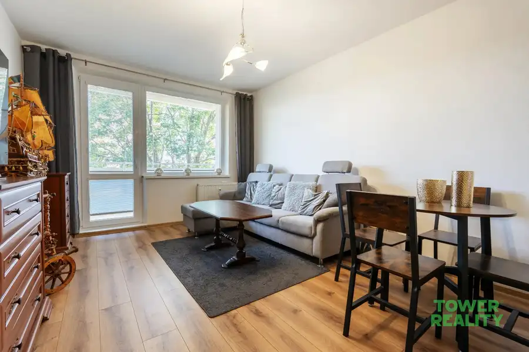
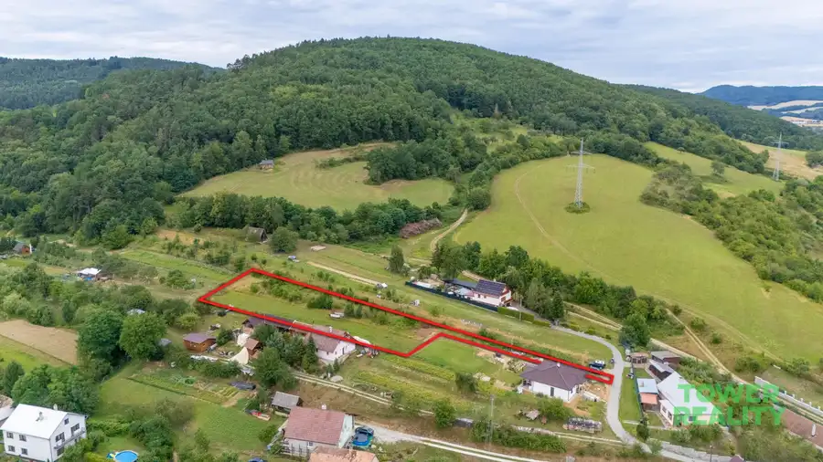
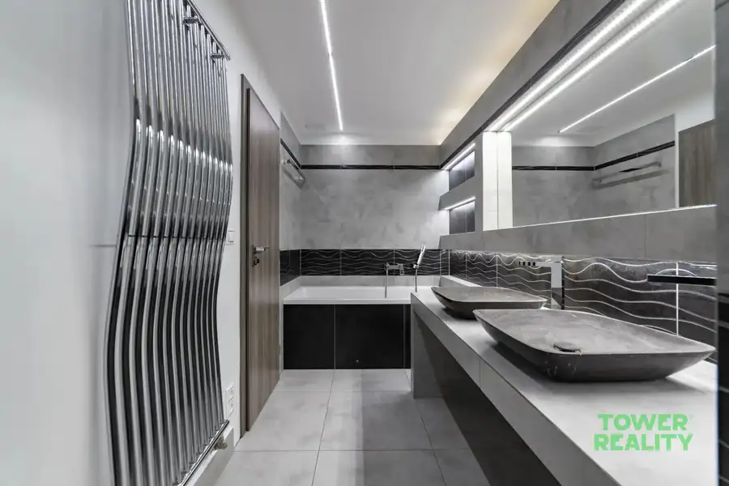
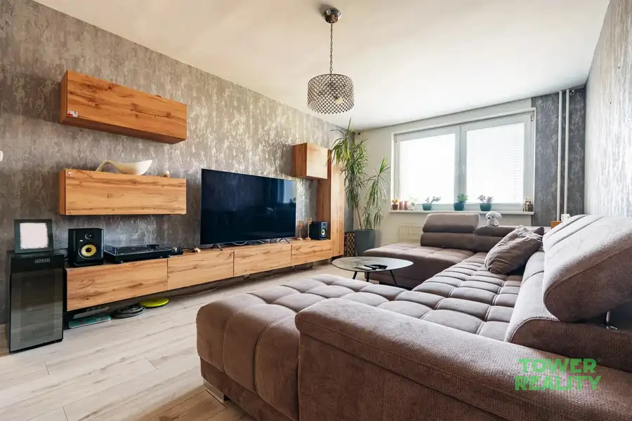
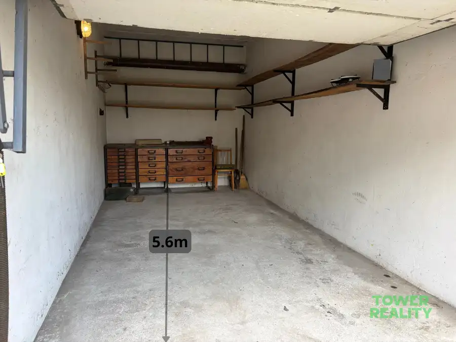

Aktuálna ponuka
Nehnuteľnosti, ktoré ponúkam
10 nehnuteľností na predaj a prenájom. Vyberte typ, alebo napíšte lokalitu.
10 z 10 ponúk

Komerčné priestoryNové10 398 000 €Na predaj | Obchodný priestor | Služby s parkovaním – ul. Bratislavská, Trenčín Trenčín 200 m² TOWER REALITY ponúka na predaj atraktívny komerčný objekt ideálny pre obchodné účely, zdravotnícke zariadenie, predajňu so showroomom alebo prevádzku…
Komerčné priestoryNové10 389 000 €Na predaj | Administratívno-obchodná budova s vlastným parkovaním | Svinná Svinná 1150 m² TOWER REALITY ponúka na predaj polyfunkčný objekt s možnosťou administratívneho aj obchodného využitia v obci Svinná.Budova bola skolaudovaná v roku…
BytNové10 398 000 €Na predaj | 2x byt | parkovanie | ulica Bratislavská Trenčín Trenčín 3-izbový200 m²1. podlažie Popis:TOWER REALITY ponúka na predaj kompletne zrekonštruovaný objekt pozostávajúci zo 2 samostatných bytových jednotiek s vlastným oploteným dvorom,…
Byt10 148 000 €Na predaj | 3-izbový byt 80m² | 2x lodžia | Pod kaštieľom Dubnica nad Váhom 3-izbový80 m²2. podlažie Popis:TOWER REALITY – exkluzívne ponúkame na predaj priestranný 3-izbový byt na ulici Pod kaštieľom.Byt má celkovú výmeru 80 m² (vrátane pivnice 2…
Dom10 398 000 €Rodinný dom s 2 bytovými jednotkami, Bratislavská ul. – Trenčín Trenčín 200 m² Popis:TOWER REALITY ponúka na predaj rodinný dom z roku 1984, situovaný len pár minút od centra mesta. Vzhľadom na oddelené vstupy a samostatné…
Byt10 179 900 €Na predaj | 3-izbový byt | ul. Gen. Goliána Trnava 3-izbový64 m²2. podlažie Popis:TOWER REALITY vám exkluzívne ponúka na predaj čiastočne zrekonštruovaný 3-izbový byt o výmere 64.5 m², ktorý je dostupný ihneď.Základné…
Pozemok4 89 900 €Pozemok na predaj | 2344m | Horenická Hôrka Lednické Rovne 2344 m² TOWER REALITY exkluzívne ponúka na predaj rozsiahly pozemok s výmerou 2 344 m², ideálny pre výstavbu rodinného domu s maximálnym súkromím.Hľadáte…
BytRezervované10 266 000 €3-izbový byt 92.5m | Garáž | Liptovská Trenčín Trenčín 3-izbový81.5 m²8. podlažie Popis:TOWER REALITY vám exkluzívne ponúka na predaj nadštandardne priestranný a moderne riešený 3-izbový byt v Trenčíne na vyhľadávanej Liptovskej…
BytRezervované10 154 900 €4-izbový byt | 80m² | Halalovka Trenčín Trenčín 4-izbový80 m²1. podlažie Popis:TOWER REALITY vám exkluzívne ponúka na predaj priestranný a prakticky riešený 4-izbový byt v Trenčíne na ulici Halalovka. Nachádza sa na 1.…
Komerčné priestoryPredané3 PredanéGaráž na predaj, Rybárska ulica, Trenčín Trenčín 15 m² Popis:TOWER REALITY vám vo výhradnom zastúpení ponúka na predaj murovanú garáž s výmerou 15m2, situovanú v priamom susedstve bytových domov…Tomuto výberu zatiaľ nezodpovedá žiadna ponuka. Napíšte mi, čo hľadáte.